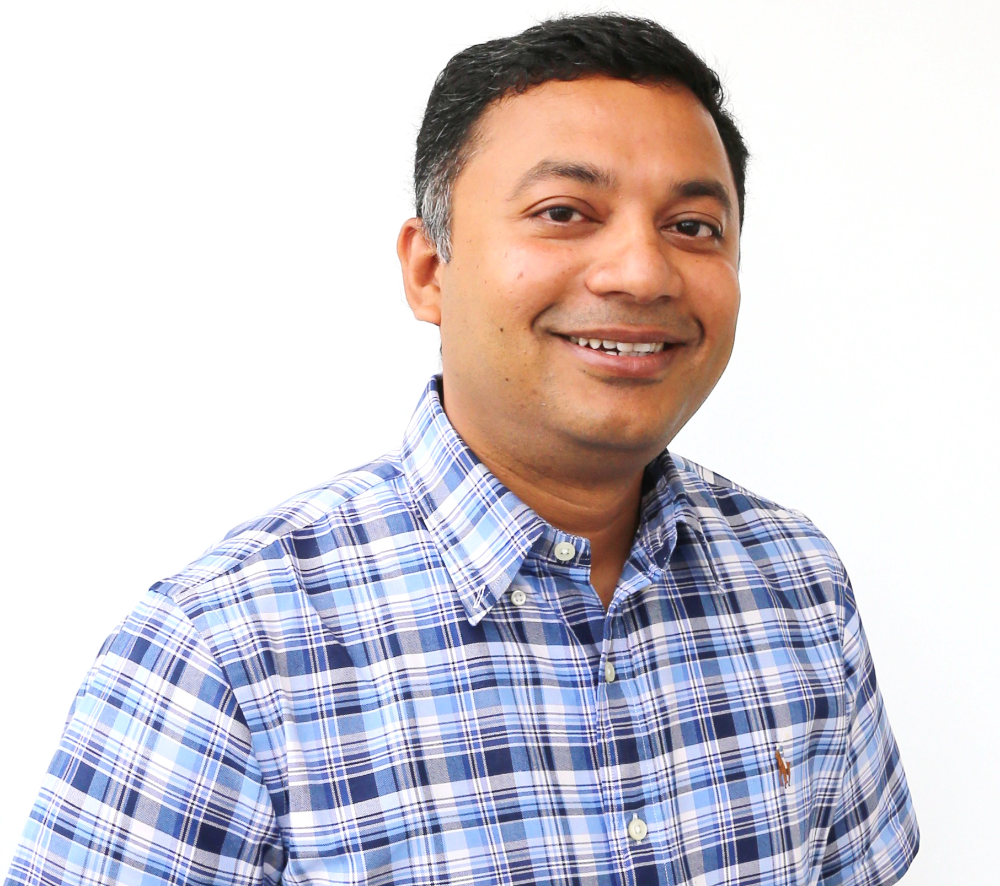

HACKƎD: Challenges and Solutions for Cybersecurity in Digital Manufacturing
Nikhil Gupta, Ph.D.
Professor, Mechanical and Aerospace Engineering
Center for Cybersecurity
New York University, Tandon School of Engineering
Abstract: Additive manufacturing (AM), also called 3D printing, is revolutionizing fields as diverse as aerospace, automobile, medical implants and devices, and archeology. The AM process chain makes extensive use of computers and cloud based resources from product design stage to final printing of the part using a 3D printer. Such a process chain is vulnerable to cyberattacks, which presents numerous challenges for quality assurance, intellectual property protection, and product authentication. Cybersecurity methods such as computer and network security, file encryption and password protection are used for making the AM process chain secure. However, breaches to even the most secure computer and network assets have been reported. A novel design based methodology is developed in the present work where features are embedded in the design files that allow printing of files in high quality only under a specific set of predetermined conditions. These methods are used for developing secure designs and product authentication methods in the AM process chain. Examples are shown where obfuscated design features make on-screen visualization of the part different from the printed part and a scheme to embed a code for product authentication. These new methods provide a second layer of security rooted in product design and can be applied in addition to the cybersecurity methods.
Speaker Bio: Dr. Nikhil Gupta is a Professor in the Mechanical and Aerospace Engineering Department at the New York University Tandon School of Engineering. He is also affiliated with Center for Cybersecurity. His research interests include developing lightweight materials, additive manufacturing and materials characterization methods. His research on additive manufacturing security is supported by The National Science Foundation, Secure America Institute and industry. He is currently serving on editorial boards of Materials Science and Engineering A, Composites Part B, and Materials Processing and Characterization. Dr. Gupta has four issued US patents and has authored over 205 journal papers and book chapters. He has served as the membership secretary of the American Society for Composites and Chair of the Composite Materials Committee of The Minerals, Metals and Materials Society.
Cross-Layer Security of Embedded and Cyber-Physical Systems
Mohammad Al Faruque, Ph.D.
Associate Professor
University of California Irvine
Abstract: Cyber-physical systems (CPS), such as a manufacturing system are engineered systems built from, and depend upon, the seamless integration of computation and physical components. Embedded systems comprising of hardware and software systems are the major enabling technology for these cyber-physical systems. Moreover, when the cyber-physical systems get connected to the Internet, it forms the Internet-of-Things (IoT). Today, CPSs can be found in security-sensitive areas such as aerospace, automotive, energy, healthcare, manufacturing, transportation, entertainment, and consumer appliances. Compared to the traditional information processing systems, due to the tight interactions between cyber and physical components in CPSs and closed-loop control from sensing to actuation, new vulnerabilities are emerging from the boundaries between various layers and domains. In this keynote talk, Prof. Al Faruque will discuss how new vulnerabilities emerge at the intersection of various components and subsystems and their various hardware, software, and physical layers. Several recent examples from various cyber-physical systems (e.g., an additive manufacturing systems) will be presented in this talk. To understand these new vulnerabilities, a very different set of methodologies and tools are needed. Defenses against these vulnerabilities also demand new hardware/software co-design approaches. The talk will highlight recent developments in this regard. This talk's major goal will be to highlight various research challenges and the need for novel scientific solutions from the CIMSS research community and definitely from the larger embedded systems, distributed computing systems, design automation, computer architecture, and Internet-of-things research communities.
Speaker Bio: Mohammad Al Faruque received his B.Sc. degree in Computer Science and Engineering (CSE) from Bangladesh University of Engineering and Technology (BUET) in 2002, and M.Sc. and Ph.D. degrees in Computer Science from Aachen Technical University and Karlsruhe Institute of Technology, Germany in 2004 and 2009, respectively. He is currently with the University of California Irvine (UCI) as an Associate Professor and Directing the Embedded and Cyber-Physical Systems Lab. He served as an Emulex Career Development Chair from October 2012 till July 2015. Before, he was with Siemens Corporate Research and Technology in Princeton, NJ as a Research Scientist. His current research is focused on the system-level design of embedded and Cyber-Physical-Systems (CPS) with a special interest in low-power design, CPS security, data-driven CPS design, etc. He is the author of 2 published books. Besides many other awards, he is the recipient of the School of Engineering Mid-Career Faculty Award for Research 2019, the IEEE Technical Committee on Cyber-Physical Systems Early-Career Award 2018, the IEEE CEDA Ernest S. Kuh Early Career Award 2016, Thomas Alva Edison Patent Award 2016 from the Edison Foundation, the 2016 DATE Best Paper Award, the 2015 DAC Best Paper Award, and the 2009 IEEE/ACM William J. McCalla ICCAD Best Paper Award. He is also the recipient of the UCI Academic Senate Distinguished Early-Career Faculty Award for Research 2017 and the School of Engineering Early-Career Faculty Award for Research 2017. Besides 120+ IEEE/ACM publications in the premier journals and conferences, he holds 9 US patents. Moreover, his work has been featured in the New York Times, the Los Angeles Times, Newsweek, ACM Communication, Science Magazine, etc. among many other national and international newspapers and magazines. Prof. Al Faruque’s research is currently funded by NSF, NIH, DOE, DoD, DARPA, DOT, DoEd, ONR, UCOP, Caltrans, and several industries. Among many important professional service roles, Dr. Al Faruque is the program chair of the premier conference ACM/IEEE International Conference on Cyber-Physical Systems (ICCPS) 2021 and the general chair for ICCPS 2022.